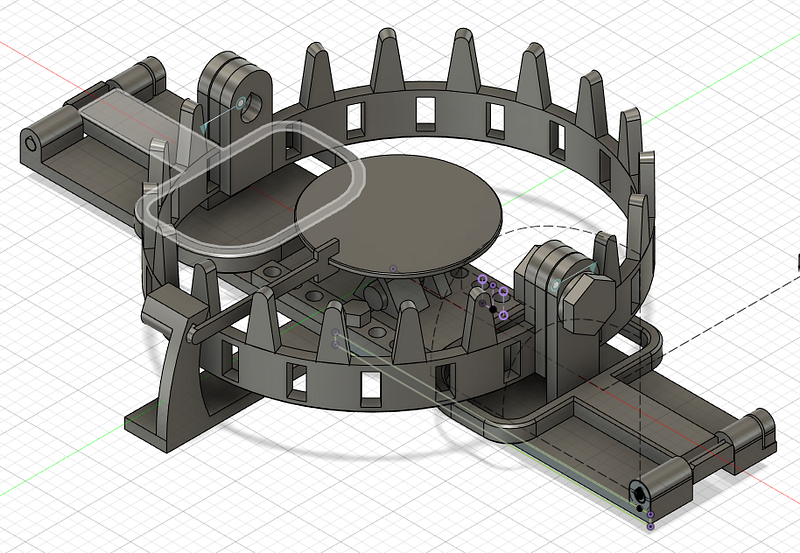

2023年：（私の）3Dプリンタ元年
2023年：（私の）3Dプリンタ元年

これまで3Dプリンタ自体のメンテに興味がなくて3Dプリンタを敬遠してた皆様。私もそのひとりでした。しかし、2023年はそんな私たちにとっての3Dプリンタ元年とも言える年になったのではないかと思います。
この記事は3Dプリンター Advent Calendar 2023の1日目のエントリです。1日目なので、まずはずぶの素人が3Dプリントにはまっていくところの話をさせていただきたいと思います。なお、私はハマりすぎてその後gihyo.jpで連載を開始するところまで行ってしまいました。
これAppleのMacbookみたいになるんじゃね？
私は根っからのソフトウェア屋さんで、正直電気回路とか含めたハードウェアやMakerムーブメントとかなんにも興味がなくてエンジニアしてました。
あるころからまわりの人が3Dプリンタでキャッキャやってるのを見ていたのですが、どうもこの3Dプリンタというヤツは自分でハードウェアをどうにかしないといけない代物であるという認識があったため、やはりハードウェアに興味がなさ過ぎて敬遠していました。
これが変わるのが、2023年の始め頃に私が「え、あのAnkerが3Dプリンタ販売してるの？！」ということに気づいたからです。どうもその前年からクラウドファンディングなどをやっていたようですね。
With AnkerMake 3D High-Speed Printer, unleash speed and perfect precision at 500mm/s. Redefine possibilities, leaving…www.ankermake.com
私はAnker信者というわけではありませんが、彼らの製品のUI設計に必要最低限のものだけを提供し、そして直感的に動くようにしてくれる、というのを感じています（本当にそれが彼らの思想かどうかは知りませんが… 私の印象です）。そのAnkerが3Dプリンタを販売するなら、ド素人がそれを購入して、梱包をといて、それから電源入れたらそれだけですぐプリントを始めてそのまま運用できるのでは？という気持ちになりました。
私の印象ではそれまでの3Dプリンタは自作PCのようなもので、そりゃ最高スペックのものを手に入れることはできるけど、作るのには自分が全てのパーツの意味とつなげ方を知ってないといけないし、作るのは時間と労力がかかるし、壊れたら全部自分の責任、まずフォーラムで情報を探して、デバッグして、正しいパーツの情報を見つけて交換なり修理して… みたいなことをしないといけないものでした。
が、それがAnkerなら（イメージでは）Macbookを買って、壊れたらAppleCareでどうにかなるよね？みたいになったので俄然現実味が湧いたのです。
市場調査
ここで初めて現実味が湧いたので、初めて市場調査を開始しました。そもそも3Dプリンタの使い方なんてわかりません。仕組みすらしらない！
色々読んで、動画を見て、「ははぁ、3Dモデルを作る、これを横方向に微分するみたいにわける、それをプリンタに渡すと材料を積んでプリントするのか…」ということをようやく理解しました。
じゃあプリンタにはどういう違いがあるんだ…？というところを調べ始めましたが、なんかXYZだCoreだIDEXだとか色々あるのと、あとどうも天地逆のSLAもあるのかみたいな感じで情報ばかり増えていって混乱してしまいました。
ただ、まわりが3Dプリントというとたいていの場合はFDMであるということ、そしてFDMのプリンタを語る上では私が重要視すべきなのは「プリントサイズ」と「プリント速度」ということがわかりました。なおこれはあくまで私にとって、ということですので、全員がそこを重要視すべきだということではありません。
前述のAnkerのAnkerMakeは（当時）250mm/secくらいのプリント速度で、そこから似たようなスペックの製品を色々探し始めました。
購入、プリント三昧の日々
結局色々迷っていたのですが、ちょうどその時どうしても3月末までに使わなければいけないお金があったので「まぁいいや、こんな時じゃないと買えないヤツ買おう！」ということでAnkerやPrusaやCrealityはやめて、Snapmaker J1（いまはJ1は売ってなくてJ1Sしかなさそうです）を購入しました。なんでいきなりIDEXなのでしょうね。自分でもよくわかりません。今だったら多分違うものを買います。
Buy the Snapmaker J1 high speed 3D Printer and accessories online at discounted price. Snapmaker J1 3D Printer features…shop.snapmaker.com
ちなみにAnkerMakeでもよかったのですが、個人的にAnkerはやめるかと思った決め手は「あちこちのYouTube動画で開封動画は見るのにその後AnkerMakeを使っている、という動画をほとんど見ない…」というのがそれでした。どうせレビューがあまりないものだったら、（当時）もっと速くてもっと値段ががっつり高いヤツにいってみようということでSnapmakerを選んだわけです。
Snapmaker自体は届くのに結局1か月強かかりましたし、思っていたよりはるかにでかくて正直ビビりましたし、「これで1か月放置したらすぐメルカリで売ろう」とは考えていました。
5月8日、初めてプリントしたのが、最初からインストールされていた2色のサメ
モデリング入門、そしてハマる
最初はまずいわゆるCADソフトウェアなんて覚えたくなかったので、まずはOpenSCADでお絵描き感覚で入門しました。
これはいまでも正しい選択だったと思います。この段階で簡単な形の組み合わせで色々できることがわかるだけでなく、重力の作用を痛感したり、クリアランスの微調整の重要さを知ったり、プラスチックの強度の限界を知ったり… 様々な失敗をしながらなぜその失敗が起こるのかを学習しました。
そしてとうとうOpenSCADではやってられませんわーとなったところでFusion360 に入門し、3Dプリンタに素人がハマっていく過程で学習したことを発表する連載を始め、今は少しずつプラスチック以外の金具を組み合わせた機構を作り始めています。
Fusion 360 is a platform for 3D CAD, modeling, manufacturing, industrial design, electronics, and mechanical…www.autodesk.com
（余談ですがAutodeskの金儲けに走っている感じは嫌ですが、Fusion360は… 素晴らしい製品だと思います。もうちょっと安ければサブスクリプションに加入したいところです）
I've never seen a real bear trap before, but I recreated a some what working prototype using all 3D printed material…youtube.com
Yes, I did watch this https://www.youtube.com/watch?v=VWuu0z3s3zMyoutube.com
今のところ何かの部品や装飾ではなく、「カラクリ」に近いものを作るのにはまっています。子供が見て楽しいと思ってくれるおもちゃを数週間に一回渡してあげると、たとえ一瞬だけであっても喜んでくれるのを見るとさらにおもしろいものを作ろうという気持ちが湧いてきます。
この過程で、私はある意味私がソフトウェアエンジニアとしてはあまり味わえていなかった「自分がイチから考え、作ったプロダクトを直接カスタマーに届ける」という体験ができていると言えるでしょう。これが… 効きます。脳汁が出ます。この強烈なプロダクト開発体験はとにかくこの世の末端のエンジニアたちには全員体験してほしいとすら思います。
2023年、プリンタは速く、扱いやすくなった。始めるなら今！
さて、自分語りが続きましたが、ここまで私が3Dプリンタにハマれたのも、ひとえに2023年は3Dプリンタに求められるクォリティがガクンとあがった年であったからだと思っています。
AnkerMakeはその前哨戦でしかありませんでした。たとえばBambu Lab社は2022年にX1-Carbonを発表し、2023年の初め頃からあちこちの動画に登場するようになりました。X1 Carbonは500m/secの速さと失敗しないプリントが売り物で、さらにオプションをつければマルチカラーの印刷もできます。お値段もそこまでバカ高くはありません。
Bambu Lab X1 series are state-of-the-art desktop 3D printers with CoreXY high speed and multi-color capabilities, built…bambulab.com
これらの製品と前後してSovolのSV07やKingroonのKLP1など、低価格帯でも似たようなプリント速度の製品が続々登場しており、もはや私のSnapmaker J1などは時代遅れにされてしまいました。
また、2023年に発売された新製品のプリンタはほとんどが自動調節機能が当たり前のようについています。ほんのちょっと前の情報を見ていると頻出していた「紙が一枚通るくらいの高さにノズルの位置を調節する」みたいな職人の技が必要なキャリブレーション作業が必要な機種はほとんどありません。
正直2023年以降に発売される3Dプリンタはこれらの基準をクリアしなければもう売れない、という気がしています。
これらの機能は私のような「ハードウェアのメンテには興味ない。とにかくプリントしたい」という層にはピッタリなものです。2023年は3Dプリンティングを始めるためのハードルが一気に下がった年と言えるでしょう。
というわけでこれまで興味が3Dプリンティングに興味があったけど手を出しづらかった、という方たちは2024年こそは是非！3Dプリンティングに挑戦していただきたいと思います。